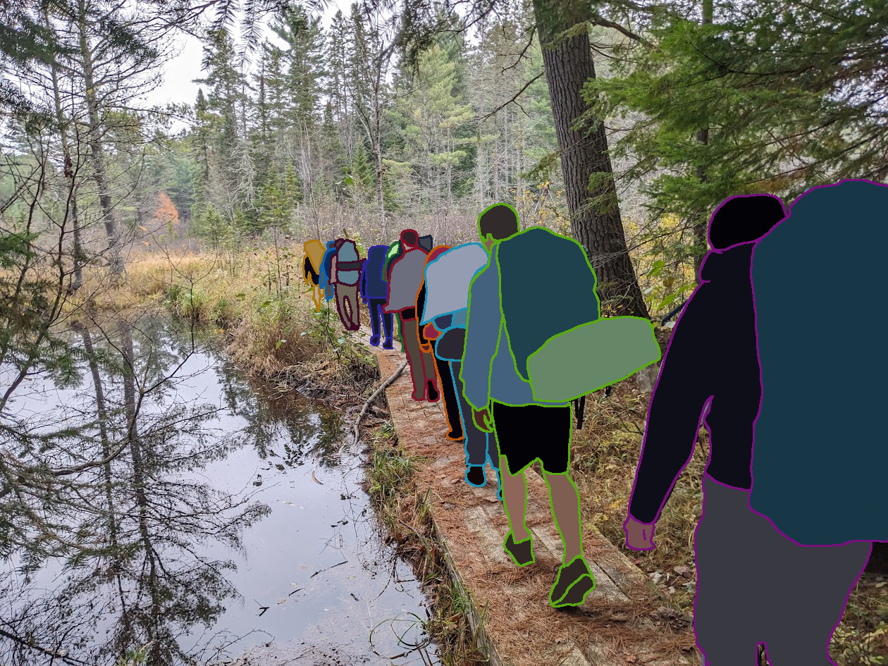
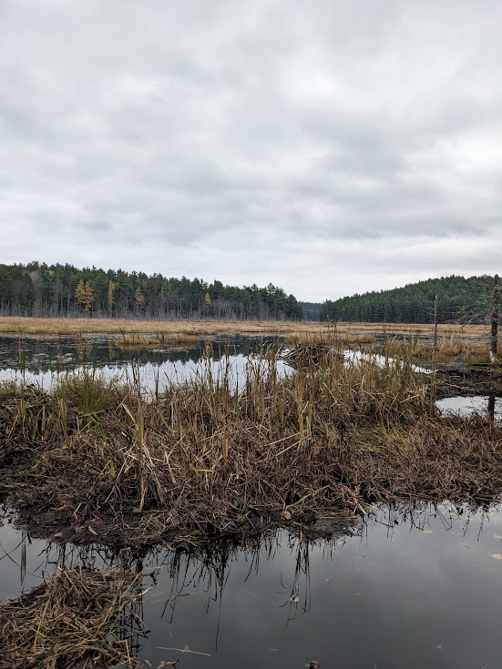
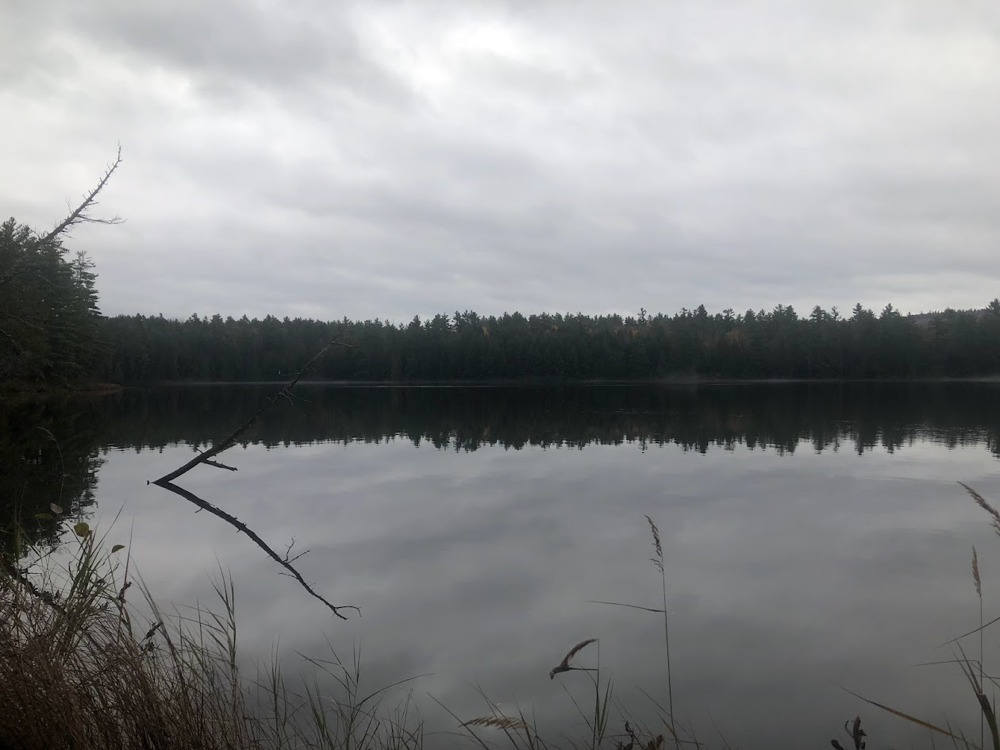
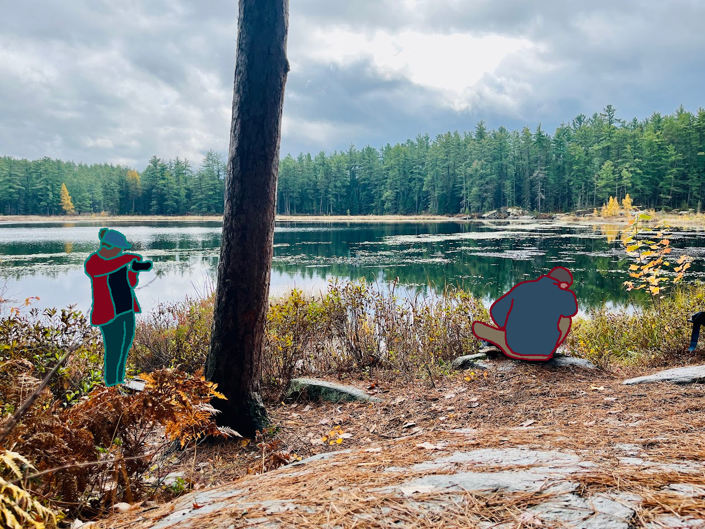
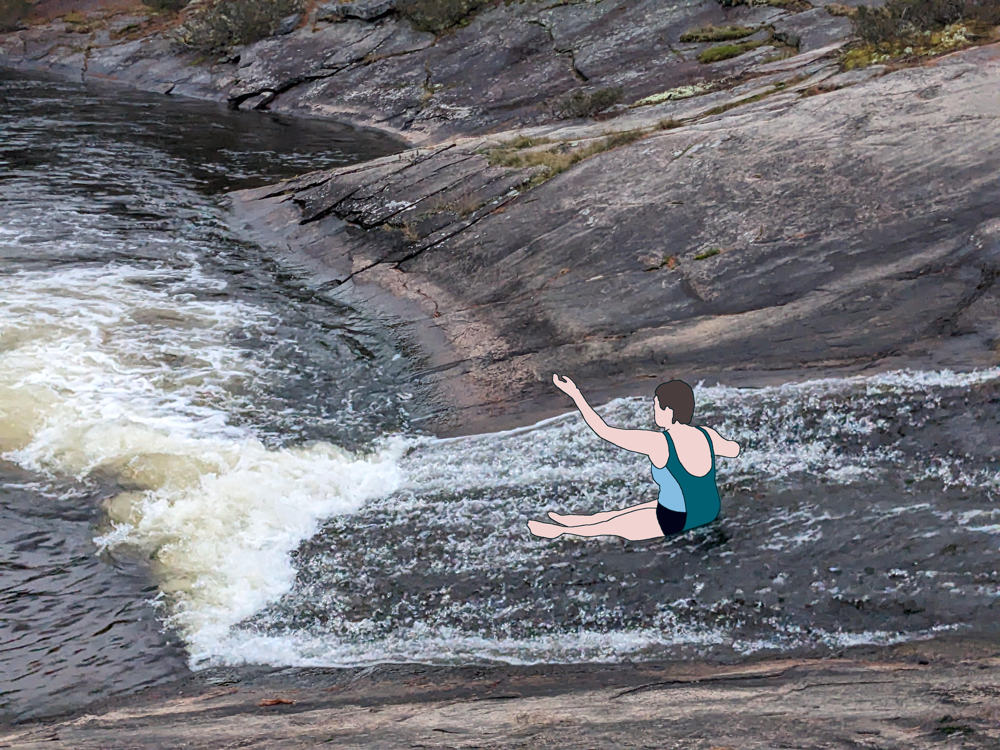

The university’s outdoor club hosted a multi day backpacking trip to Algonquin, and I was eager to sign up. We gathered early in the morning in the parking lot outside campus, with fog hanging in the air as the sun began to rise. As people filtered in, we started chatting and figuring out how to divide ourselves into cars for the drive. Most of us didn’t know each other, so there was that initial awkwardness, but it didn’t last long. Soon enough we split into groups, packed into our cars, and headed to the park.
When we arrived, we regrouped and got all of our bags and gear sorted, along with a few quick snacks. It was still early, chilly, and damp, and everything felt slightly wet. We were already a bit worried about rain as we set off along the trail in a loose line. There was some conversation, but also a lot of quiet, which I actually enjoyed. It’s hard to talk properly when you’re always walking ahead of or behind someone anyway.

Us hiking inline.
The hike took around four hours. It wasn’t the hardest trip by any means, but there were plenty of hills and rocky sections to keep things interesting. By the time we reached the campsite, the weather had clearly turned. We quickly set up our tents and tarps, and just as we finished, the rain started. Within an hour, it was pouring.
For some reason, a few of us decided it would be a good idea to explore around the lake despite the rain. It was completely spontaneous, and I hadn’t even changed into proper shoes, so I ended up hiking in camp sandals over slippery roots and rocks. What started as a short walk turned into an attempt to circle the entire lake. Along the way we saw beaver lodges and dams, which was pretty cool, but the trip quickly became longer than expected. We were soaked, cold, and increasingly aware that we might have made a bad call.

The beaver lodge we saw while exploring, the next day after the rain stopped.
One of the guys with us, who was less experienced, started shivering and complaining about the cold. I had been suggesting we turn back for a while, even though part of me still wanted to keep going. At one point, about halfway around the lake, we could actually see our campsite across the water. We yelled to the others and heard something back, but couldn’t make out what they said over the rain. Turning back felt pointless, so we pushed on.
By this point, we were worried about getting lost. The trail wasn’t well marked, and we had no map. I also knew we’d probably be in trouble for leaving without telling anyone. Sure enough, when we finally got back, we got chewed out by the trip leaders.
On the bright side, dinner was ready. They had made tacos with refried beans and chicken, and everyone was packed tightly under the cooking tarp trying to stay dry. Since I was already completely soaked, I sat closer to the edge. I ate quickly, then went to my tent to change into dry clothes. Exhausted, I lay down with my tent mates to rest.
After a while, the rain eased off and we gathered for a campfire. We sat around talking and trying to dry out our clothes, but most people were pretty tired, so it was a short night. One of the guys in my tent decided he wanted to sleep under the stars. People warned him it was a bad idea since it would likely rain again, but he went for it anyway. Sure enough, I was woken up in the middle of the night when he came back, dragging in a soaked sleeping bag and a lot of water with him. I felt a bit bad for him, but I was also pretty annoyed at being woken up and having the tent get damp.
We woke up to a calm, quiet morning. It was still cloudy and damp, but much nicer than the day before. We gathered around the fire, made some oatmeal and coffee, then packed up and got ready to head out. We had a full day of hiking ahead to reach the next campsite, which had a water feature we wanted to visit before dark.

The calm glassy lake in the morning.
We stopped at midday for lunch and made “tacos in a bag”, basically taco ingredients mixed into Doritos. It’s simple and great for camping, even if it’s not exactly healthy. The spot we chose had a great view of the lake. The air was still and foggy, and the water reflected the sky and trees almost perfectly.

Someone taking a photo of someone taking a photo of me taking a photo of the lake.
When we reached the campsite, we set everything up and gathered firewood from whatever dry pieces we could find. Once things were settled, we headed out on a short hike to the nearby water feature. It turned out to be a really cool spot, with a natural rock slide and a deeper area for diving. Some people went swimming, but I decided to skip it. I had already been wet enough, and it was still pretty cold.

Someone going down the natural waterslide.
Afterwards, we sat on the rocks and had a simple dinner of peanut butter and jelly wraps, along with Nutella. We headed back to camp as it got dark, cleaned up a bit, and started another fire. This one was livelier, with more people joining in. We roasted marshmallows, told stories, and even heard coyotes howling across the lake.
The next morning was completely different. Bright blue skies, sunshine, and finally dry conditions. We had a long hike ahead, so we didn’t linger. After a quick breakfast, we packed up and started back. The hike was fairly uneventful. Everyone was tired, so it was mostly quiet, which I didn’t mind. Sometimes it’s nice to just focus on your steps and the sounds around you.
When we reached the parking lot, we split back into our cars and started heading home. Our car, along with another group, stopped in a nearby town to grab Subway. We were starving, and it felt well deserved. We must have looked pretty rough, dirty and still a bit damp from the trip. After eating, we finished the drive back to campus, where everyone went their separate ways.